24 Flux Freezing
Flux-freezing is an important phenomenon in highly conducting plasmas. In these notes, we derive flux-freezing in ideal magnetohydrodynamics (MHD), however it is important to remark that flux-freezing also applies beyond ideal MHD, at least in an approximate way. We also discuss the role of flux freezing in the context of some important astrophysical systems. The key equation we will consider is the induction equation (or Faraday’s Law), which reads (when \(\eta = \operatorname{const}\), see Equation 23.19): \[ \frac{\partial \mathbf{B}}{\partial t} = \nabla \times (\mathbf{v} \times \mathbf{B}) + \frac{c \eta}{4 \pi} \nabla^2 \mathbf{B}. \tag{24.1}\]
24.1 The Ideal-MHD Limit
Let \(L\) and \(V\) be characteristic length and velocity scales for the plasma. We can introduce the dimensionless time and space coordinates and velocity \[ \hat{t} = t \frac{V}{L}, \qquad \hat{x} = \frac{x}{L}, \qquad \hat{\mathbf{v}} = \frac{\mathbf{v}}{V} . \tag{24.2}\] Faraday’s law can be written as \[ \frac{V}{L} \frac{\partial \mathbf{B}}{\partial \hat{t}} = \frac{V}{L} \hat{\nabla} \times (\hat{\mathbf{v}} \times \mathbf{B}) + \frac{c \eta}{4 \pi L^2} \hat{\nabla}^2 \mathbf{B}. \tag{24.3}\] That is \[ \frac{\partial \mathbf{B}}{\partial \hat{t}} = \hat{\nabla} \times (\hat{\mathbf{v}} \times \mathbf{B}) + \left( \frac{c \eta}{4 \pi LV} \right) \hat{\nabla}^2 \mathbf{B}= \hat{\nabla} \times (\hat{\mathbf{v}} \times \mathbf{B}) + \frac{1}{\mathrm{R}_M} \hat{\nabla}^2 \mathbf{B}. \tag{24.4}\] We have introduced the magnetic Reynolds number \[ \mathrm{R}_M = \frac{LV}{c \eta / 4 \pi} . \tag{24.5}\] The magnetic Reynolds number measures the relative importance of advection and resistivity in the evolution of the magnetic field. It is analogous to the “usual” Reynolds number, which measures the ratio of inertial to viscous forces in a fluid. When \(\mathrm{R}_M \gg 1\), we say that we are in the ideal-MHD limit.
In the ideal-MHD limit, the Faraday law simplifies to \[ \frac{\partial \mathbf{B}}{\partial t} = \nabla \times (\mathbf{v} \times \mathbf{B}) \Longrightarrow \frac{\partial \mathbf{B}}{\partial t} + \nabla \times (\mathbf{B} \times \mathbf{v}) = 0. \tag{24.6}\] Remarkably this is identical to the vorticity equation for a barotropic fluid: \[ \frac{\partial \boldsymbol{\omega}}{\partial t} + \nabla \times (\boldsymbol{\omega} \times \mathbf{v}) = 0. \tag{24.7}\] The analogy between vorticity and magnetic field plays an important role in our understanding of MHD phenomena such as dynamos and is sometimes known as the Batchelor’s analogy.
We remember that the vorticity satisfies Kelvin’s circulation theorem, which states that the circulation of the flux of the vorticity across a material surface bounded by a curve \(C (t)\) (moving with the fluid) is conserved: \[ \frac{\mathrm{d} \Gamma (t)}{\mathrm{d} t} = \oint_{C (t)} \boldsymbol{\omega} \cdot \mathrm{d} \mathbf{A}= 0. \tag{24.8}\] By analogy, we find that the magnetic flux across any surface co-moving with the flow is constant in ideal-MHD: \[ \boxed{\frac{\mathrm{d} \Phi (t)}{\mathrm{d} t} = \oint_{C (t)} \mathbf{B} \cdot \mathrm{d} \mathbf{A}= 0.} \tag{24.9}\] This fact is called flux freezing and is one of the most important properties of MHD. To understand this consider a magnetic flux tube. As the name suggests, a flux tube is an imaginary bundle of magnetic field lines dragged by the plasma. This is illustrated in Figure 24.1.
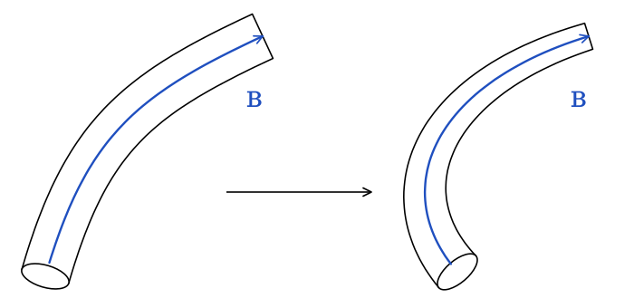
Consider the surface bounding the flux tube on the sides. This surface is such that the magnetic flux across it is zero, since there is no component of the field perpendicular to it. If we let this surface move with the plasma velocity, the flux freezing condition requires the magnetic field to deform to stay always parallel to it, as illustrated in Figure 24.1. In other words, the magnetic field is dragged by the plasma as if it was painted on the fluid elements. As we will see shortly, flux freezing has other important consequences.
At the microscopic level, the reason why flux freezing occurs in strongly-magnetized plasmas is that the charged particles are “stuck” to the magnetic field lines1. Another way to think about flux freezing is in terms of induced currents. In order for the magnetic field lines to drift with respect to the plasma with velocity \(\mathbf{v}_d\), one would need to induce an electric field (in the plasma frame) \[ \mathbf{E}' = \frac{\mathbf{v}_d \times \mathbf{B}}{c} \tag{24.10}\] which corresponds to a current \(\mathbf{j}' =\mathbf{E}' / \eta\). However, \(\eta \rightarrow 0\) in the ideal-MHD limit, meaning that an infinite current is required to cause the field lines to slip.
24.1.1 Magnetic Field Amplification
Flux freezing also implies that, if a flux tube is compressed by the flow, then its magnetic field intensity is amplified. To see this, consider the situation illustrated in Figure 24.2.
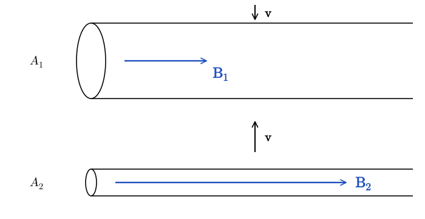
When a flux tube is compressed and its area changes from \(A_1\) to \(A_2\), the B-field strength needs to change in such a way so that the magnetic flux remains unchanged: \[ A_1 B_1 = A_2 B_2 . \tag{24.11}\] So the magnetic field strength must be amplified: \[ B_2 = \frac{A_1}{A_2} B_1 . \tag{24.12}\] It is instructive to compare this with the rate at which the plasma density is changed during the same process. In this case, the quantity that is conserved is the mass of the plasma in the flux tube, so \[ \rho A \ell = \operatorname{const} \Longrightarrow \rho_1 A_1 \ell = \rho_2 A_2 \ell \Longrightarrow \rho_2 = \frac{A_1}{A_2} \rho_1 . \tag{24.13}\] In this situation, we find that the ratio of magnetic field strength to density in the plasma stays constant: \[ \frac{B}{\rho} = \operatorname{const} . \tag{24.14}\] Things are very different if the magnetic flux tube is compressed in the direction parallel to the magnetic field, as illustrated in Figure 24.3.
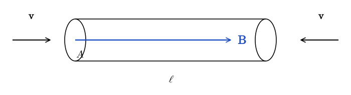
In this case, the density of the plasma changes according to \[ \rho A \ell = \operatorname{const} \Longrightarrow \frac{\rho_2}{\rho_1} = \frac{\ell_1}{\ell_2} . \tag{24.15}\] However, \(B\) remains constant, because the cross-section of the flux tube, \(A\), is unchanged.
24.1.2 Resistive Evolution
If the resistivity is finite, \(\eta > 0\), then the magnetic field lines are not stuck to the plasma, but can drift. To understand how this process operates, we consider the evolution of a magnetic field under the sole influence of Ohmic diffusion: \[ \frac{\partial \mathbf{B}}{\partial t} = \frac{\eta c}{4 \pi} \nabla^2 \mathbf{B}. \tag{24.17}\] If the typical curvature radius of the field lines is \(L\), then we can approximate the previous equation as \[ \frac{\partial B}{\partial t} \sim \frac{\eta c}{4 \pi L^2} B = \frac{1}{T_{\operatorname{decay}}} B, \qquad T_{\operatorname{decay}} = \frac{4 \pi L^2}{\eta c} . \tag{24.18}\] For many astrophysical applications \(L\) is very large, so \(T_{\operatorname{decay}}\) is very long. We will put actual numbers for \(\eta\) and \(L\) when we discuss the problem of star formation below. If the magnetic field has more than one characteristic scale, then the smaller scales will be dissipated more rapidly by the resistivity. This has the effect of “smoothing” the field lines. To quantify this, we can use the Fourier transform. Accordingly, we represent the magnetic field as a superposition of plane waves \[ \mathbf{B} (t, \mathbf{x}) = \int \mathrm{d}^3 \mathbf{k} \hat{\mathbf{B}}_{\mathbf{k}} (t) e^{\mathrm{i} \mathbf{k} \cdot \mathbf{x}}, \qquad \hat{\mathbf{B}}_{\mathbf{k}} = \frac{1}{2 \pi} \int \mathrm{d}^3 \mathbf{x}\mathbf{B} (t, \mathbf{x}) e^{- \mathrm{i} \mathbf{k} \cdot \mathbf{x}} . \tag{24.19}\] Note that the \(\mathbf{k}= 0\) mode of the B-field corresponds to the average value of the field: \[ \hat{\mathbf{B}}_0 = \frac{1}{2 \pi} \int \mathrm{d}^3 \mathbf{x}\mathbf{B} (t, \mathbf{x}) = \frac{1}{2 \pi} \langle \mathbf{B} \rangle . \tag{24.20}\] Inserting Equation 24.19 into Equation 24.17, we obtain: \[ \int \mathrm{d}^3 \mathbf{k}e^{\mathrm{i} \mathbf{k} \cdot \mathbf{x}} \left[ \frac{\mathrm{d} \hat{\mathbf{B}}_{\mathbf{k}}}{\mathrm{d} t} + \frac{\eta ck^2}{4 \pi} \hat{\mathbf{B}}_{\mathbf{k}} \right] = 0 \tag{24.21}\] The integral can be zero only if all the infinite quantities in the square parenthesis are zero: \[ \frac{\mathrm{d} \hat{\mathbf{B}}_{\mathbf{k}}}{\mathrm{d} t} = - \frac{\eta ck^2}{4 \pi} \hat{\mathbf{B}}_{\mathbf{k}} . \tag{24.22}\] So we have transformed Equation 24.17 into a simple system having an infinite number of decoupled equations, with solutions \[ \hat{\mathbf{B}}_{\mathbf{k}} (t) = \hat{\mathbf{B}}_{\mathbf{k}} (0) \exp \left( - \frac{\eta ck^2}{4 \pi} t \right) . \tag{24.23}\] We can see that different modes of the B-field decay exponentially and that large \(k\) modes are damped exponentially more quickly than smaller \(k\) modes. On the other hand, the \(k = 0\) mode is not affected at all and stays constant for all times. This means that the action of the resistivity is not really to make the field decay, but rather to straighten out all field lines, as illustrated in Figure 24.4.
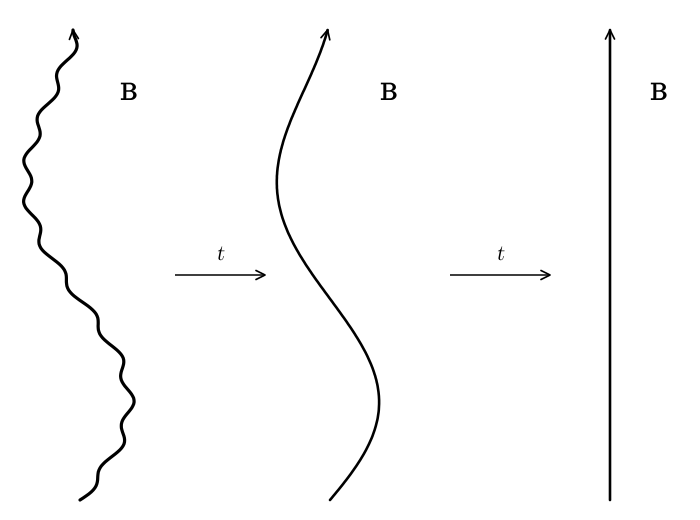
24.2 Star Formation
One situation in which flux freezing must be violated is star formation. Consider the collapse of a region of a molecular cloud to form a star. If flux freezing were to hold, using the same approach as for the stellar collapse example, we would find \[ \begin{array}{clcc} \rho : & 10^{- 24} \mathrm{g} \mathrm{cm}^{- 3} & \longrightarrow & 1\mathrm{g} \cdot \mathrm{cm}^{- 3}\\ B : & 10^{- 6} \mathrm{G} & \longrightarrow & 10^{10} \mathrm{G} \end{array} \tag{24.24}\] That is, the protostar would be embedded with a pulsar-like magnetic field. This is actually impossible. Indeed, the gravitational binding energy of the protostar would be \[ \Omega \sim - \frac{3 GM^2}{5 R} \sim 2 \cdot 10^{48} M_1^2 \mathrm{erg}, \tag{24.25}\] where \(M_1\) is the protostar mass in solar masses. The energy density in the magnetic field would be \[ U_B \sim \frac{4}{3} \pi R^3 \cdot \frac{1}{8 \pi} B^2 \sim 5 \cdot 10^{51} \mathrm{erg} \gg \Omega ! \tag{24.26}\] The protostar would be unbound, meaning that the magnetic stresses would tear it apart. In reality, the magnetic field tension halts the collapse of an ideal-MHD cloud well before these levels of magnetic field strength can be achieved. Obviously, Nature has a way to form stars from magnetized clouds, so how does it defeat flux freezing?
It turns out that resistivity is not sufficient to do the trick. The resistivity of ionized hydrogen plasma depends weakly on density and can be approximated as (Kulsrud 2005) \[ \frac{\eta c}{4 \pi} \approx \frac{0.42 \cdot 10^7}{T_{\operatorname{eV}}^{3 / 2}} \mathrm{cm}^2 /\mathrm{s}. \tag{24.27}\] For a star \(T_{\operatorname{eV}} \approx 10^2\) and \(L \sim R_{\odot} \sim 10^{11} \mathrm{cm}\) so the decay time is \[ T_{\operatorname{decay}} = \frac{L^2}{\eta c / 4 \pi} \sim 10^{18} \mathrm{s} \sim 30 \mathrm{Gyr} . \tag{24.28}\] This is longer than the age of the Universe, so resistivity is clearly not sufficient to release the magnetic tension and allow stars to form.
The mechanism currently thought to be responsible for the drift between magnetic fields and the plasma is ambipolar diffusion. The details go beyond the scope of this course, but the key observation is that molecular clouds are only weakly ionized. The neutral component of the gas is not affected by the Lorentz force, so it can flow perpendicular to field lines. The Lorentz force on the ions, on the other hand, is orders of magnitude larger than gravity, so the ions are stuck on the field lines. The mutual friction between ions and neutrals has the effect of regulating the rate of collapse and determines the time for the formation of protostars. This physics is illustrated in Figure 24.5.
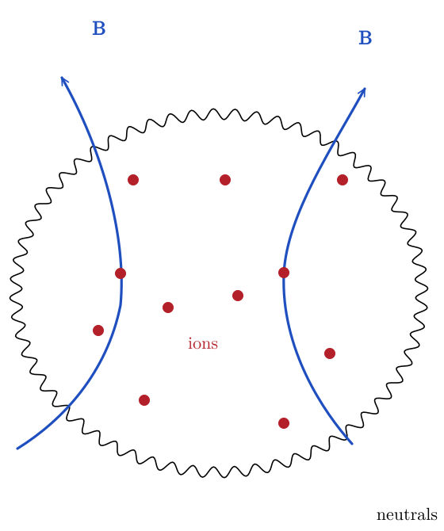
Magnetic fields do not just regulate the collapse of clouds into protostars. They also play a key role enabling it. Indeed, magnetic fields allow the protostar to lose angular momentum and prevent the gas from getting stuck at the centrifugal barrier. This happens because the collapsing cloud forces a large column of gas, parallel to the mean magnetic field, to corotate with it. This allows the forming protostar to dissipate angular momentum. We explore this in a more quantitative way in the homework.
24.3 Io and Jupiter
The unipolar-inductor model for the interaction between Jupiter and its moon Io is one of the early successes of plasma astrophysics. This model has also been adopted to explain a variety of other astrophysical systems, including the launching of electromagnetic waves by black holes moving through plasma. The main idea of this model is that the motion of a conductor, in this case Io, in an external magnetic field, in this case Jupiter’s field, generates an electric current.
The original motivation for this model was the discovery in the 60’s of radio flares from Jupiter in phase with the rise and setting of Io. More precisely, Jupiter has a rotation period of about 10 hours, while Io has an orbital period of about 43 hours. Radio flares are preferentially detected when Io has a longitude of \(90^{\circ}\) or \(240^{\circ}\) with respect to Jupiter, as shown in Figure 24.6, taken from Duncan (1965).
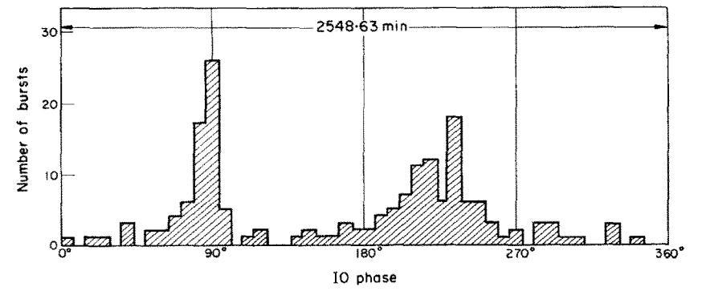
In 1969, Goldreich and Lynden-Bell (Goldreich and Lynden-Bell 1969) proposed a model to explain:
the mechanism generating the radiation;
the reason for the phase difference between the rising and setting of Io and the radiation bursts.
We explain this model in a qualitative way and then build a semi-quantitative simplified model below.
Io is primarily composed of silicates and iron, so it has a good electrical conductivity. This means that there is no electric field inside Io, in Io’s frame of reference, and the magnetic field lines of Jupiter are stuck to it (flux freezing). However, because in Jupiter’s frame of reference Io completes a revolution every 13 hours, the field lines cannot be frozen everywhere, otherwise the magnetic energy in the magnetosphere would grow without bound2. This means that the field lines must slip somewhere. It turns out that this happens in Jupiter’s atmosphere, where the gas resistivity is the highest, due to the presence of a neutral gas. The geometry of the magnetic flux tube connecting Jupiter and Io is illustrated in Figure 24.7.
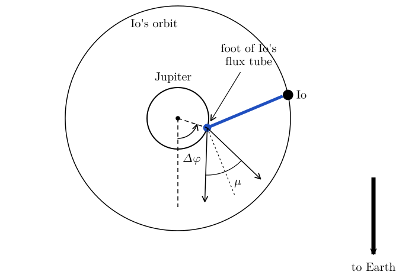
The slippage of the field lines on Jupiter’s surface drives a current along the flux tube connecting the planet to the moon. Electrons gyrate in the field lines producing cyclotron radiation, which is beamed primarily in the direction perpendicular to the field lines, explaining the offset between Io’s rises and settings and the radio bursts. This is illustrated in more detail in Figure 24.8.
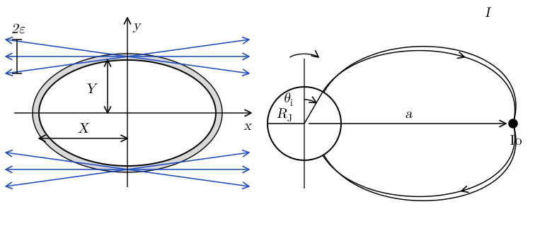
A strong electric field is created in the direction perpendicular to the \(B\)-field, in the \(Y\)-direction shown in the figure. The potential difference across the flux tube is \(\Delta \Phi \sim 10^8 \mathrm{V}\)3. However, the motion of electrons perpendicular to the field lines is suppressed by the Lorentz force, so a current is driven along the field lines, through the moon, and back to the planet, as shown in the right panel of Figure 24.8. The current intensity is \(I \sim 10^6 \mathrm{amp}\), which is sufficient to produce cyclotron and synchrotron radiation.
Here, we consider a toy model in which we see how the electric field is created by the slippage of the field lines. We consider a conductor moving in an external B-field anchored in a wall with infinite conductivity, as shown in Figure 24.9.
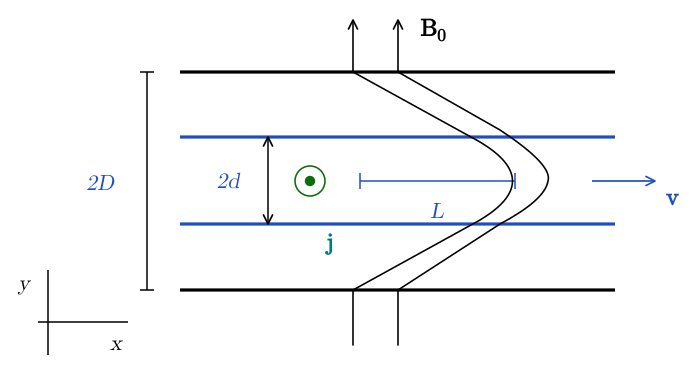
In our analogy, the conductor is Jupiter’s atmosphere, while the wall represents Io. We imagine that initially the field is vertical and the conductor is at rest. At \(t = 0\), we start moving the conductor with velocity \(\mathbf{v}\) in the \(x\)-direction. The field is dragged up to a distance \(L\) and then starts to slip, realizing the configuration shown in Figure 24.9.
There is no external electric field, so the electric field in the frame of the conductor is \[ \mathbf{E}' =\mathbf{E}+ \frac{\mathbf{v} \times \mathbf{B}}{c} = \frac{\mathbf{v} \times \mathbf{B}}{c} = \frac{v_x B_y}{c} \hat{\mathbf{z}}, \tag{24.29}\] and the associated current is \(\mathbf{j}= \sigma \left( \frac{\mathbf{v} \times \mathbf{B}}{c} \right) = \sigma \frac{v_x B_y}{c} \hat{\mathbf{z}}\). The current is responsible for the creation of the \(x\)-component of the \(B\)-field (setting \(\eta = 1 / \sigma\)): \[ \nabla \times \mathbf{B}= 4 \pi \mathbf{j} \Longrightarrow - \partial_y B_x = 4 \pi j_z \Longrightarrow B_x = - 4 \pi j_z y = - \frac{4 \pi}{\eta c} v_x B_y y. \tag{24.30}\] On the other hand, from the geometry of the system, we have: \[ B_x = \left. \frac{B_y L}{D} \right|_{y = d} \Longrightarrow L = \frac{v_x Dd}{\eta c / 4 \pi} = v_x T_{\operatorname{decay}} . \tag{24.31}\]
This shows the two key features of the system. The relative motion of the conductor and the walls generates an electric field (a consequence of Faraday’s Law). The electric field drives a current in the system. The current, in turn, causes the field lines to bend and slip (from Ampere’s Law).
Pulsars were discovered by Jocelyn Bell in 1967. It was later realized that pulsars are rotating neutron stars endowed with strong magnetic fields. In 1969, Goldreich and Julian (Goldreich and Julian 1969) developed the first model of a pulsar. Like the unipolar induction model, Goldreich and Julian’s model applies to a variety of astrophysical systems and shows another key physical effect associated with flux freezing. Namely, the fact that rotating neutron stars fill their surroundings with a dense plasma, creating the so called magnetosphere.

In this model, shown in Figure 24.10, we neglect the misalignment between magnetic North pole and rotational axis, which would be needed to produce the pulsated emission. However, this model contains all required physical ingredients. We assume at first that the pulsar is a neutron star with a dipole magnetic field in vacuum. The magnetic field is then given by \[ \mathbf{B}= B_0 \left( \tfrac{R}{r} \right)^3 (2 \cos \theta \hat{\mathbf{r}} + \sin \theta \hat{\boldsymbol{\theta}}) . \tag{24.32}\] The angular velocity of the star is given by \[ \boldsymbol{\Omega}= \Omega \hat{\mathbf{z}}, \qquad \hat{\mathbf{z}} = \cos \theta \hat{\mathbf{r}} - \sin \theta \hat{\boldsymbol{\theta}} . \tag{24.33}\] In the previous equation \(\hat{\mathbf{z}}\) is the unit vector in the \(z\)-direction. Since neutron stars are essentially perfect conductors, there should be no electric field in their frame \(\mathbf{E}' = 0\). This means that in the inertial frame there is an electric field inside the star given by \[ \mathbf{E}= - \frac{\mathbf{v} \times \mathbf{B}}{c} = - \frac{1}{c} (\boldsymbol{\Omega} \times \mathbf{r}) \times \mathbf{B}= \frac{B_0 \Omega r}{c} \left( \frac{R}{r} \right)^3 (\sin^2 \theta \hat{\mathbf{r}} - 2 \cos \theta \sin \theta \hat{\boldsymbol{\theta}}) . \tag{24.34}\] In the previous equation we have used the fact that \[ \boldsymbol{\Omega} \times \mathbf{r}= \Omega r \sin \theta \hat{\boldsymbol{\varphi}} \tag{24.35}\] and \[ \hat{\boldsymbol{\varphi}} \times (2 \cos \theta \hat{\mathbf{r}} + \sin \theta \hat{\boldsymbol{\theta}}) = 2 \cos \theta \hat{\boldsymbol{\theta}} - \sin \theta \hat{\mathbf{r}} . \tag{24.36}\] If there is vacuum in the exterior (and assuming axisymmetry), then the external electric potential is \[ \Phi (r, \theta) = \sum_{\ell = 0}^{\infty} \frac{\phi_{\ell}}{r^{\ell + 1}} P_{\ell} (\cos \theta), \qquad r > R \tag{24.37}\] where \(\phi_{\ell}\) are fixed by the fact that the perpendicular component of the electric field should be continuous on the surface of the star4 \[ [\![ \mathbf{E}_{\perp} ]\!] = 0 \Longrightarrow E_{\theta} (r = R) = \frac{1}{R} \partial_{\theta} \Phi (r = R) . \tag{24.38}\] If the external field is quadrupolar, meaning that \[ \Phi (r, \theta) = \frac{\phi_2}{r^3} P_2 (\cos \theta), \tag{24.39}\] then Equation 24.38 implies \[ \boxed{\Phi = - \frac{2 B_0 \Omega R^5}{3 cr^3} P_2 (\cos \theta) .} \tag{24.40}\] So we find that there is an enormous electrostatic potential at the surface of the star: \[ \Phi \approx 2 \times 10^{13} (B_{12} R^2_6 / P) \mathrm{statV} \approx 5 \times 10^{15} (B_{12} R^2_6 / P) \mathrm{V}. \tag{24.41}\] For example, the ratio of electrostatic to gravitational force is \[ \frac{| \mathbf{F}_{\operatorname{EM}} |}{| \mathbf{F}_{\mathrm{G}} |} \sim \frac{\Phi e}{\frac{GM}{R} m} = \left\{\begin{array}{ll} 5 \times 10^7, & \text{protons},\\ 8 \times 10^{10}, & \text{electrons} . \end{array}\right. \gg 1. \tag{24.42}\] The electromagnetic forces are strong enough to pull charges out of the surface of the neutron star and fill all the region around it with plasma. The field is so strong that electron-positron cascade production is triggered once the first particles are extracted. This is the so-called magnetosphere. The magnetosphere creates currents that to leading order short out the electric potential to infinity.
In the extreme conditions found in pulsar or black-hole magnetospheres, the electromagnetic energy density is so large compared to the plasma inertia that the plasma is forced to move in such a way as to cancel the Lorentz force. In other words, electrons, positrons, and ions can only flow along \(B\)-field lines and the induced currents are such that the electric field is shorted out. This is the so-called force-free electrodynamics approximation: \[ \mathbf{E} \cdot \mathbf{B}= 0, \mathbf{E}+ \frac{1}{c} \mathbf{v} \times \mathbf{B}= 0. \tag{24.43}\] From the first condition, if the system is axisymmetric, we have that \[ \mathbf{E}= E_0 \hat{\boldsymbol{\phi}} \times \mathbf{B} \Longrightarrow \mathbf{E}= - \frac{\Omega r \sin \theta}{c} \hat{\boldsymbol{\phi}} \times \mathbf{B}. \tag{24.44}\] From the last two equations, we find \[ 0 = \frac{1}{c} (\mathbf{v}- \Omega r \sin \theta) \times \mathbf{B} \Longrightarrow \mathbf{v}= \Omega r \sin \theta \hat{\boldsymbol{\phi}} +\mathbf{v}_d \hat{\mathbf{B}} . \tag{24.45}\] So the plasma velocity has two components. The plasma is forced to co-rotate with the pulsar (first term in the first equation). However, when \(\Omega r \sin \theta \geq c\), the drift velocity \(\mathbf{v}_d\) of plasma along the field lines must be non-zero so that \(| \mathbf{v} | < c\). The region at which \(\Omega r \sin \theta = c\) is called the light cylinder. It is the boundary of the region in which magnetic field lines can be closed. Outside the light cylinder, the \(B\)-field lines bend and reach infinity so that plasma can flow away from/to the pulsar (depending on its charge) creating a current.
The plasma charge density is given by Gauss’ law of electrodynamics: \[ q = \frac{\nabla \cdot \mathbf{E}}{4 \pi} . \tag{24.46}\] Note that \[ 4 \pi q = \nabla \cdot \mathbf{E}= \nabla \cdot \left[ - \frac{1}{c} \mathbf{v} \times \mathbf{B} \right] = - \frac{1}{c} \mathbf{B} \cdot (\nabla \times \mathbf{v}) + \frac{1}{c} \mathbf{v} \cdot (\nabla \times \mathbf{B}) . \tag{24.47}\] This can be computed using \[ \nabla \times \mathbf{v}= \nabla \times (\boldsymbol{\Omega} \times \mathbf{r}) =\boldsymbol{\Omega} (\nabla \cdot \mathbf{r}) - (\boldsymbol{\Omega} \cdot \nabla) \mathbf{r}= 2\boldsymbol{\Omega} \tag{24.48}\] and \[ \nabla \times \mathbf{B}= 4 \pi \mathbf{j}= 4 \pi q \frac{\mathbf{v}}{c} \tag{24.49}\] So the charge density is \[ 4 \pi q = - \frac{2}{c} \mathbf{B} \cdot \boldsymbol{\Omega}+ 4 \pi q \frac{v^2}{c^2} \Longrightarrow q_{\operatorname{GJ}} = - \frac{\boldsymbol{\Omega} \cdot \mathbf{B}}{2 \pi c} \frac{1}{1 - v^2 / c^2} . \tag{24.50}\] Note that \(\boldsymbol{\Omega} \cdot \mathbf{B}\) changes sign across a critical line in the magnetosphere. This means that there is charge separation in the magnetosphere.
The minimum electron number density is the so-called Goldreich-Julian density \[ n_{\operatorname{GJ}} = \frac{q_{\operatorname{GJ}}}{e} = 10^{10} (B_{12} / P) \mathrm{cm}^{- 3} . \tag{24.51}\] This is \(\sim 10\) orders of magnitude larger than the typical density of electrons in the ISM. More recent theoretical models show that the plasma number density can be several orders of magnitude larger than the Goldreich-Julian density. This is because the plasma is rich of electron-positron pairs and \(n_{\operatorname{GJ}}\) only measures the net density of charges. For example, see Figure 24.11.
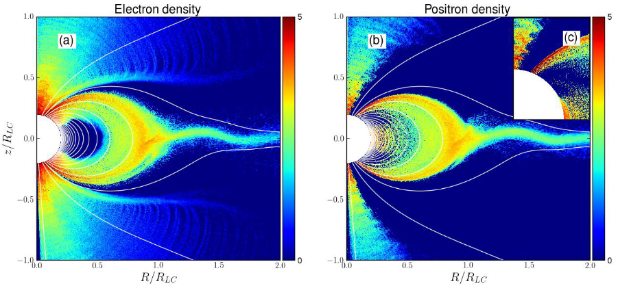
24.4 In-class worksheet
Spherical Collapse. A spherical distribution of plasma (a star or a molecular cloud) is endowed with a dipolar magnetic field, as shown in Figure 24.12.
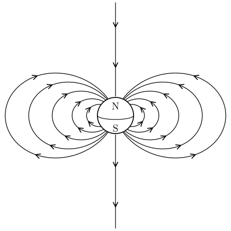
The sphere contracts from an initial radius \(R_0\) to a new radius \(R_1 < R_0\).
How do the gravitational binding energy \(\Omega\) and the magnetic energy \(U_B\) change?
In the process of forming a neutron star, an object with mass \(M \sim 10^{34} \mathrm{g}\) contracts from an initial radius \(R_0 \sim 10^{11} \mathrm{cm}\) to \(R_1 \sim 10^6 \mathrm{cm}\). By what factor is the magnetic field amplified? If the typical magnetic field strength for a star is \(B \sim 100\mathrm{G}\), what is the field strength expected for a neutron star?
Gas in a molecular cloud with density \(\rho \sim 10^{- 24} \mathrm{g}/ \mathrm{cm}^3\) and typical magnetic field \(B \sim 1 \mu \mathrm{G}\) contracts to form a star with \(\rho \sim 1\mathrm{g}/ \mathrm{cm}^3\). What is the strength of the resulting field if flux freezing holds?
24.5 Exercises
Exercise 24.1 (Flux freezing in an Alfvén wave) Consider a small-amplitude disturbance in a homogeneous plasma in a uniform magnetic field \(\mathbf{B}\) in the \(z\)-direction. Set \(\rho = \mathrm{const}\) and \(p = \mathrm{const}\), and \[ \mathbf{v}= \epsilon v_A \sin (kz - \omega t) \hat{\mathbf{x}}, \qquad \mathbf{B}= B_0 \hat{\mathbf{z}} - \epsilon B_0 \sin (kz - \omega t) \hat{\mathbf{x}} . \tag{24.52}\]
Show that, if \(\omega = kv_A\) and \(v_A = B_0 / \sqrt{4 \pi \rho}\), then these equations satisfy the ideal-MHD equations to first order in \(\epsilon\) (neglecting all terms of order \(\epsilon^2\) and higher).
Calculate the displacement current and show that it is small compared to \(4 \pi j\), if \(v_A \ll c\).
Calculate the resistive correction to \(\mathbf{B}\) and show that it is small if \(\omega T_{\operatorname{decay}} \gg 1\), where \(T_{\operatorname{decay}} = 4 \pi / (k^2 \eta c)\).
Find the equation for the magnetic field lines to order \(\epsilon\) by integrating \[ \frac{\mathrm{d} x}{\mathrm{d} z} = \frac{B_x}{B_0} \tag{24.53}\] and show that we get the same equation from the displacement of the fluid \[ x (z, t) = \int v_x \mathrm{d} t \tag{24.54}\] assuming flux freezing of the lines in the plasma.
24.6 Further reading
- Clarke and Carswell (2007), Chapter 13 (plasmas).
More precisely they are forced to undergo cyclotron motion along the field lines by the Lorentz force.↩︎
Imagine a single flux tube wound around Jupiter multiple times. The magnetic flux in the tube must be conserved, so the intensity of the field is constant. However, as the flux tube is wound around, more and more of the magnetosphere is filled by the coils of the flux tube, so the integrated magnetic energy (\(B^2 / 8 \pi\)) grows linearly with time over the winding timescale.↩︎
Note that in Goldreich & Lynden-Bell paper the results are quoted in statVolts. Here, we have converted them to SI Volts.↩︎
In other words, we are matching the interior solution with the exterior solution.↩︎